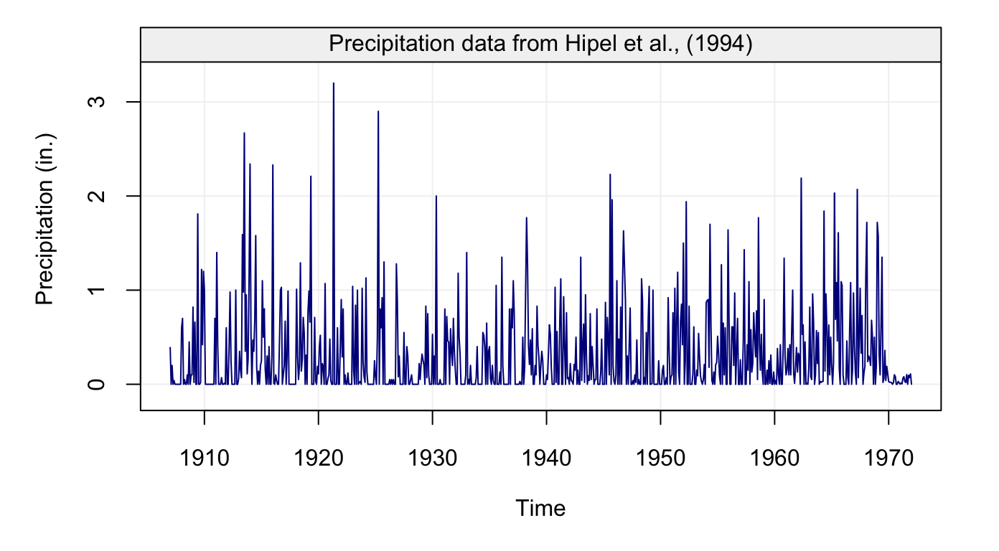
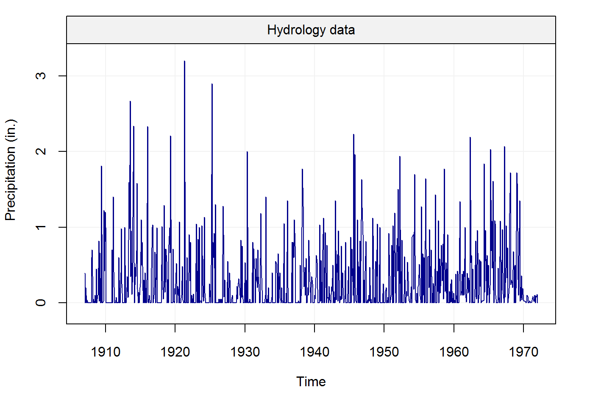
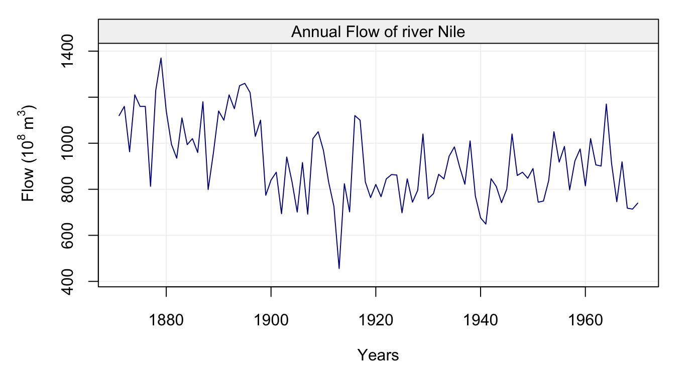

In this section, we will breifly explain demo simts functionality by performing simulations with time series data. In the examples shown here, time series data may take the form of either a one-column matrix, data.frame, or numeric vector.
The following three datasets stored in simts will be used as examples.
The code below shows how to setup a time series oriented object with the gts() function. Here we take samples from each dataset at a rate of freq ticks per sample. By applying the plot() on the result of a gts() simulation, we can observe a visualization of the data simulated.
# Load hydro dataset
data("hydro")
# Simulate based on data
hydro = gts(as.vector(hydro), start = 1907, freq = 12, unit_ts = "in.",
name_ts = "Precipitation", data_name = "Hydrology data")
# Plot hydro simulation
plot(hydro)
# Load savingrt dataset
data("savingrt")
# Simulate based on data
savingrt = gts(as.vector(savingrt), start = 1959, freq = 12, unit_ts = "%",
name_ts = "Saving Rates", data_name = "US Personal Saving Rates")
# Plot savingrt simulation
plot(savingrt)
# Load Nile dataset
Nile = datasets::Nile
nile = gts(as.vector(Nile), start = 1871, end = 1970, freq = 1,
unit_ts = bquote(paste(10^8," ",m^3)), name_ts = "Flow",
name_time = "Years", data_name = "Annual Flow of river Nile")
# Plot Nile simulation
plot(nile)